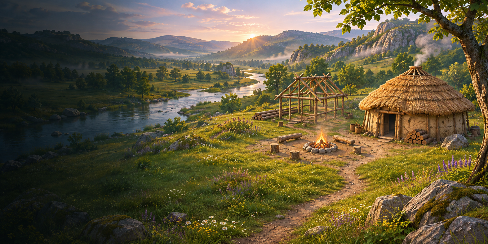

Review only · no Bronze gameplay, new buildings, save changes or runtime integration. Original building art is shown; Gate 2 remains separate.
Era transition study
Material changes; controls stay in place.
Compact completion feedback
750 ms pulse → persistent unreadOrdinary events stay at the existing research or goals/journey icon. Goal and achievement groups retain independent unread state. Open the destination, then view each exact result to clear it.
Selected construction · stage study
No unrelated looping timer
Loading and era transition
Brand → era/region → settlement
STONE AGE
Ready to preview · no work progress measured
Tip · Tap a missing requirement to find its exact building or research.
Scene concepts do not implement bridges, defenses, agents or new geography. Larger transition is reserved for era completion. Ordinary menus never start this loading study.
Fresh native audit captures
Unchanged app, isolated QA identity. These are captured screens; all other screens above are review mockups.